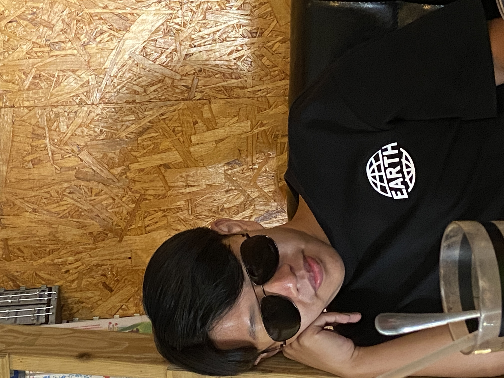
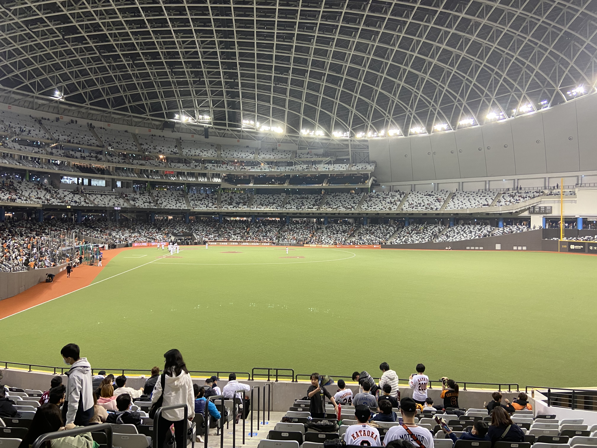
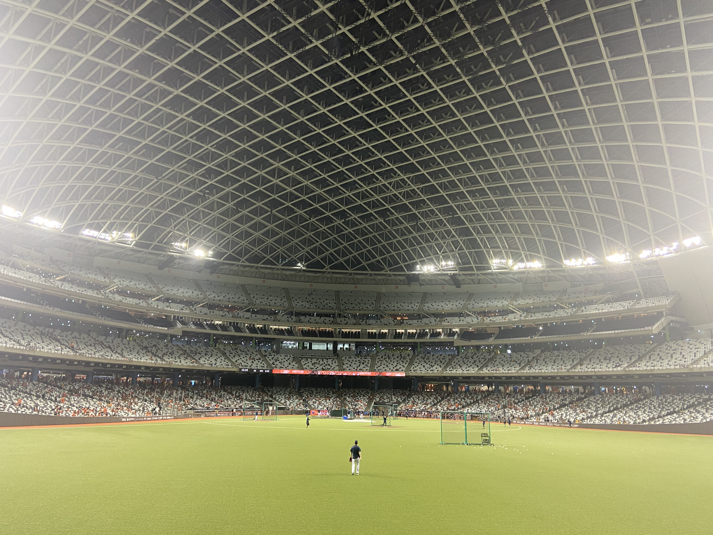
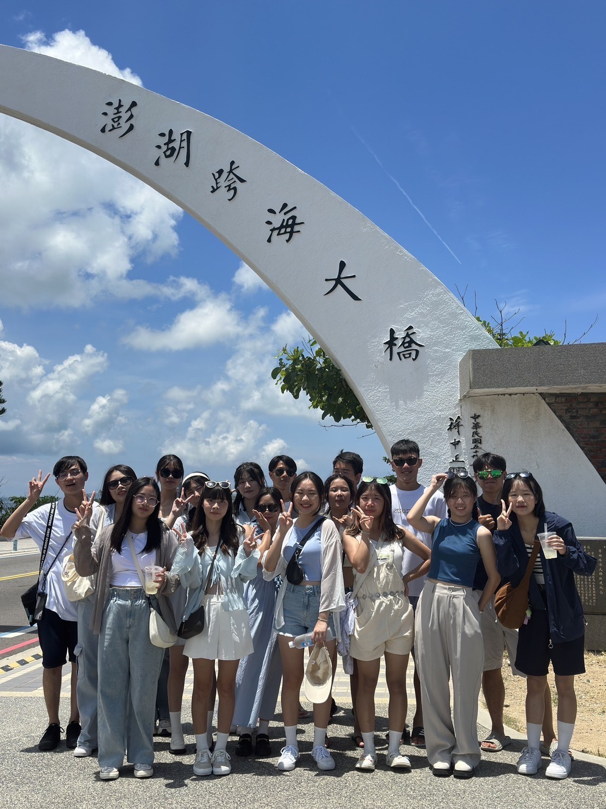
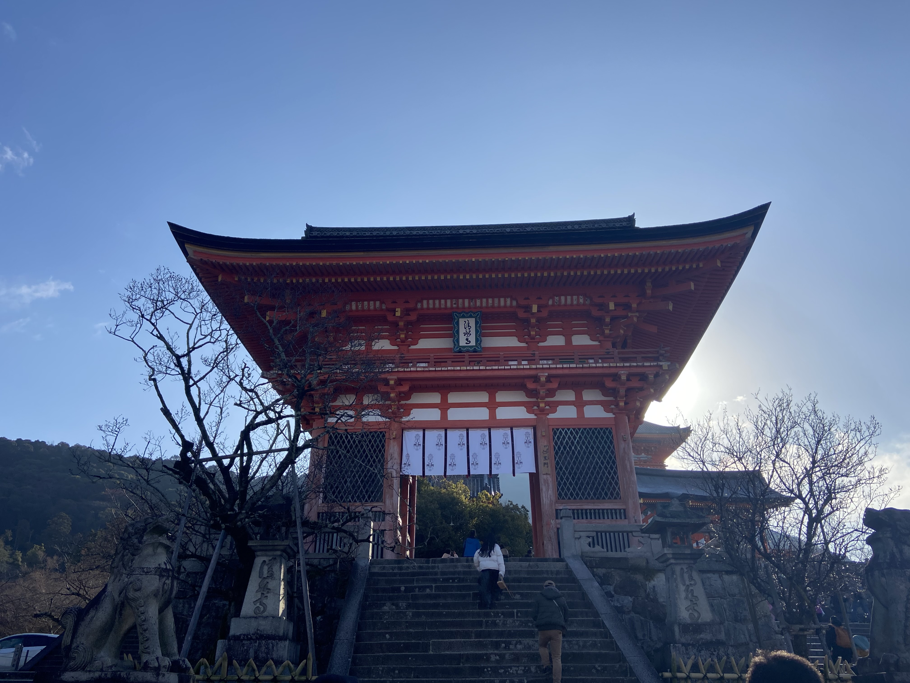

陳宥希
Birthday: 2004.12.04
星座:射手座
人格特質:開朗、愛笑、愛搞笑
University: CYCU Information Management
Place of birth: Miaoli, Taiwan
"做人如果沒有夢想，那跟鹹魚有什麼分別"
Skills
PYTHON
CANVA
JAVA
HTML

圍棋業餘5段證書
Experiences
高中二年級-英語歌唱比賽

這是在我高中二年級時的表演，記得剛升高二因為重新分班的關係，所以大家對彼此都還不太熟悉，這個比賽有讓大家比較凝聚起來，雖然最後沒得名，卻是個難忘的經驗。
高中三年級-西瓜盃籃球賽

這是高中畢業前的最後一次的班際籃球賽，當時我們班男生本來就不多，當時還有人未打先受傷，結果就是被對面體育生電。不過難得場下有這麼多人在看我們打球，回想起來還是滿開心的。
大一上學期-管理學(觀音海灘淨灘)

這是前年管理學做的志工服務，那天要去觀音海灘淨灘，想不到早上在下雨，但最後還是決定騎過去。抵達時雨也剛好停了，就在那邊夾了1個多小時的垃圾，感覺非常累又充實。
Work Experience
- 補習班櫃台工讀生 2020/06 ~ 2020/09
- 大潤發飲料課工讀生 2023/07 ~ 2023/08
- 水星資訊工讀生 2025/07 ~ 2025/08
- 大全聯熟餐課工讀生 2026/01 ~ 2026/02
Habits
Watching Baseball Games


我是從國小五年級的時候開始看棒球，從那時候起就支持著中信兄弟，到現在也10年了，這幾年都滿常進場支持棒球的，這兩張是我今年去大巨蛋開幕戰看球拍的照片，希望以後都能繼續開心進場看球。
Travels


其實我算是個滿喜歡出去走走看看的人，所以對旅行這件事並不排斥，前面那張是之前暑假和朋友去澎湖玩的照片，第二張是第一次到日本玩拍下來的，也是我人生第一次出國，感覺很新鮮。